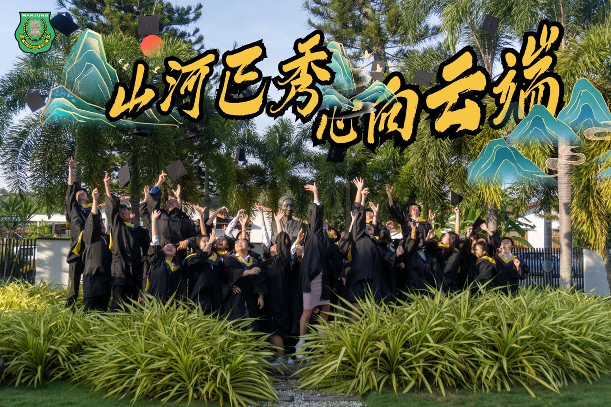
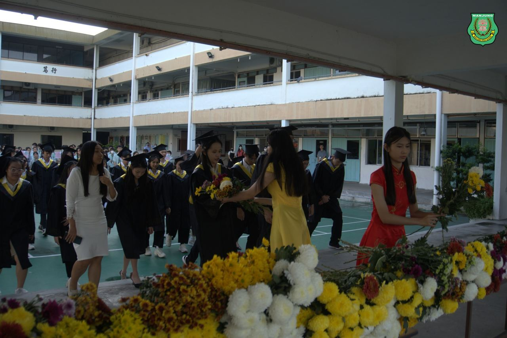
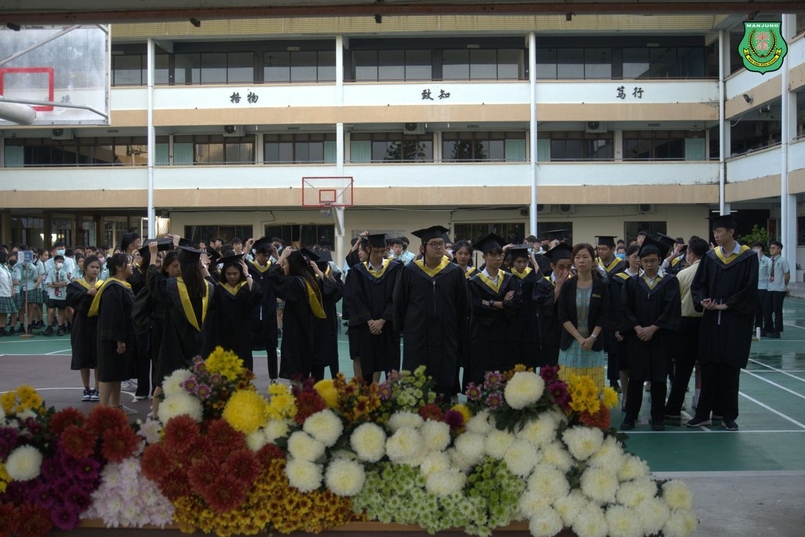
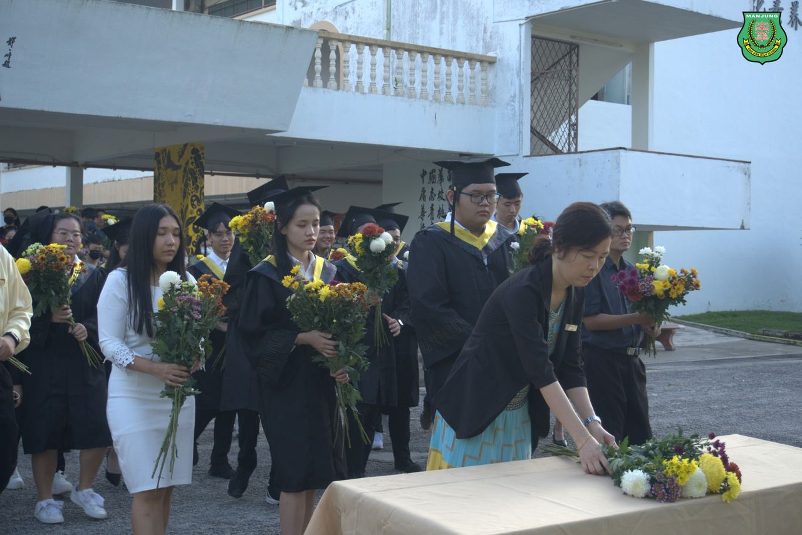
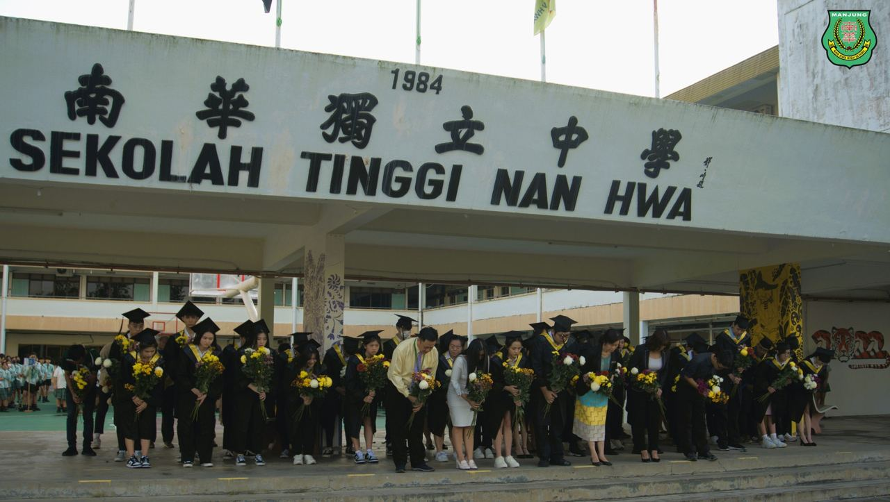
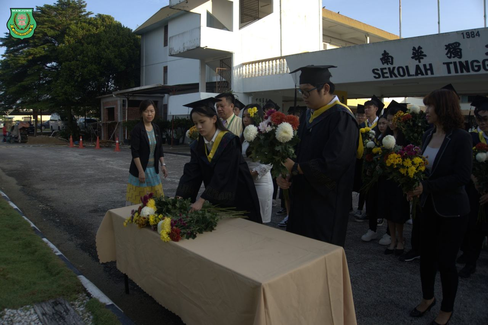
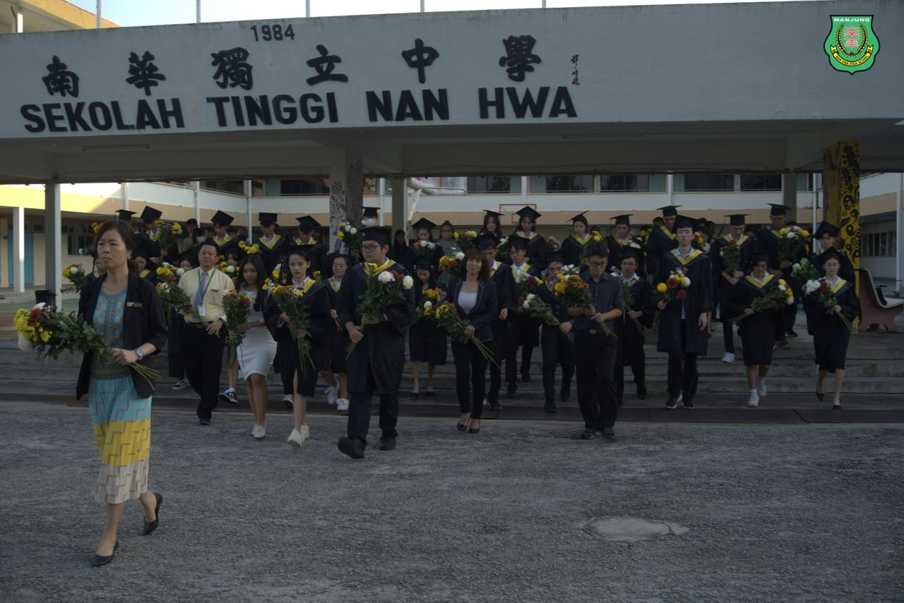
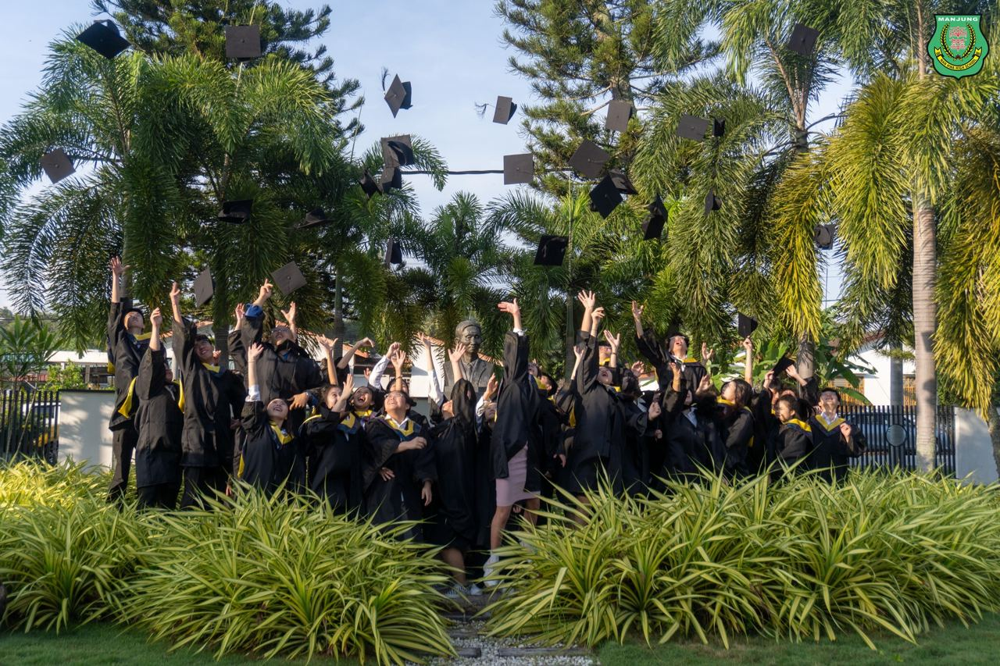

"山河已秀，心向云端"
"山河已秀，心向云端"
第49届 暨 初中第52届毕业典礼
（1日讯）南华独中于日前举办高中第49届暨初中第52届毕业典礼，主题为“山河已秀，心向云端”，寄寓着高初中毕业生完成人生阶段性的山河路程，准备启程探索更辽阔无际的广袤世界。毕业生在开始仪式前，更是懂得饮水思源，在全体董事会、师生、家长联谊会、校友会及家长的见证下向南华独中之父丹斯里颜清文的铜像献花，感谢母校的栽培恩情。随后齐聚礼堂唱奏骊歌、领取毕业证书、告别母校，场面温馨感人。
董事长颜登逸先生在致辞中表示，时代跌宕起伏不定，不变的是要具备应变瞬息万变社会的能力。母校南华独中近年来致力于培养具备“迎领”21世纪中华文化素养的领袖人才，希望高三生不忘在学校期间锻炼起来的软硬实力，以应对社会的挑战。颜董事长更强调，校训中的“明德·格物·致知·笃行”是一种期许，更是一种人生处事的态度，尤其是学会彰明德行，成为才德兼备的领袖。
校长陈丽冰博士则是以苏轼《定风波》中的“莫听穿林打叶声，何妨吟啸且徐行，竹杖芒鞋轻胜马，谁怕？”勉励毕业生在未来的日子里时刻谨记拨开眼前的迷雾，永远不停下脚步，稳稳走好人生路，并劝导毕业生无论将来选择何种专业，都请保持队创新的渴望，对困难的勇气，勇往直前，迎接挑战。
家联主席叶燕妮女士则劝勉毕业生即将迎来新的人生、将奔赴各自的远方，将展开更为广阔的天地，但请记住母校永远是大家的港湾，无论身在何处，无论遇到何种困境，南华独中都是大家的坚强后盾。希望每一位学生在未来的道路上能够保持初心，勇往直前，追逐梦想，为最初的梦想启航。
出席毕业典礼者有董事长颜登逸先生、副董事长高级拿督叶绍利、董事总务何添胜先生、董事副总务林道祥先生、家联主席叶燕妮女士、校友会代表方佳升及毕业生家长代表。
#山河已秀心向云端 #毕业典礼
#南华独中 #曼绒 #实兆远







